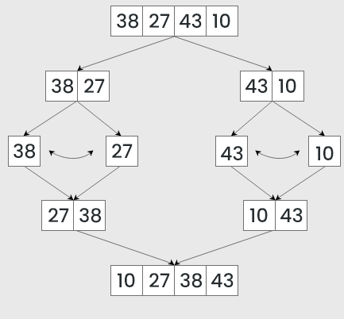
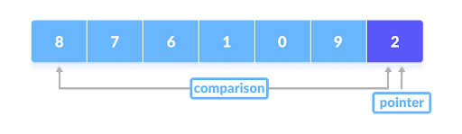
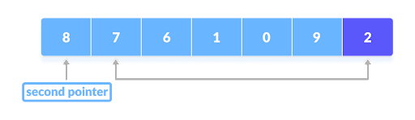
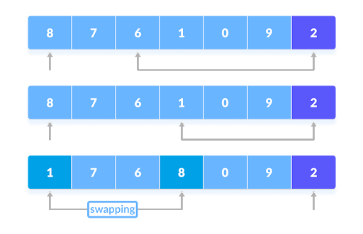
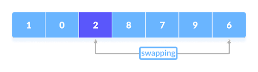
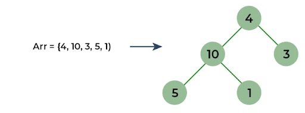
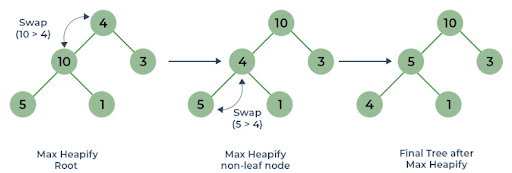
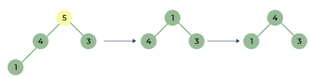
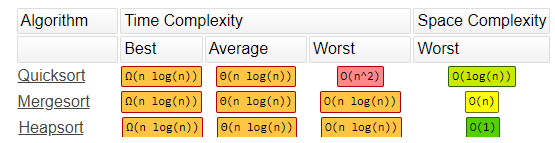

Advanced Sort Algorithms
Merge Sort
Merge sort is a sorting algorithm that works by splitting an array into subarrays and then merges them back together while putting the elements in order.
For instance in the picture the sort starts by splitting the starting array of four elements into two subarrays of two elements which are then each split into a subarray of one element. Then the subarrays are merged back together, while putting the elements in order and eventually resulting in an array where all the elements are in order.

It always takes a linear amount of time since it always divides the array into two halves and takes a linear time to merge them back together. This makes it good for large arrays, but not so good for smaller arrays. It uses additional memory to create subarrays, so it’s not optimal for low storage.
Quick Sort
Quick sort is a sorting algorithm that works by choosing a number as its pivot, and partitioning the elements so that the ones less than the pivot are on the pivot’s left, and the one’s greater than the pivot are on the pivot’s right. Those partitioned sides are then also partitioned over and over until every element is in the correct position and the sort is complete. This is shown in the picture below.

The actual partitioning works by starting by comparing the pivot with the first element.

If the element is greater than the pivot then a second pointer (the first pointer is the pivot) is put at that element. Then it compares the pivot with the next element and if it's less than the pivot its swapped with the second pointer.

For instance in the picture below 8 is the second pointer, so the algorithm keeps checking each element until it finds 1 which is less than the pivot so it gets swapped with 8.

This process repeats over and over until every element has been compared with the pivot and swapped accordingly, and then the last second pointer is swapped with the pivot causing all the elements less than the pointer to be on the left, and all the ones greater than the pointer to be on the right.

Quick sort’s time complexity varies based on how the pivot is chosen, if the pivot is selected so that both sides are balanced then it's fast, but if it's positioned where both sides are extremely unbalanced then it's much slower. Quick Sort doesn’t use much memory since all the partitioning is done within the original array. However it's an unstable sort since duplicate elements don’t maintain their relative positions.
Heap Sort
Heap sort is a sorting algorithm where the array is first built into a binary tree. A binary tree is a data structure where each node has two children. You can see an example of an array being turned into a binary tree in the picture below.

This binary tree is then “heapified” by swapping the nodes so the parent node is always greater than or equal to the child.

After this is done the sort is performed by removing the root node (the one at the top) and moving it to the end of the array. The tree is then heapfied again, the max node is sent to the end of the array, and this repeats until all the nodes have been put in order.

The time complexity is always the same so it is good for large data sets, but not so good for small ones. Its storage use is minimal, just like Quick Sort, since it only needs the original array to sort. Just like Quick Sort it is unstable so the relative order of duplicate elements will not be preserved.
Sort Comparison
All three sorts have their own advantages and disadvantages in regards to space and time complexity. They are all good for large data sets, but merge and quick are not efficient when it comes to small data sets. As indicated in the table below their time complexities are all the same, but it is possible for Quick Sort to be the slowest if the pivot is chosen poorly. Due to its sub arrays, Merge Sort is the worst for space complexity, while Quick Sort and Heap Sort don’t have this drawback since everything happens in the same array. However Merge Sort is the only stable sort, as both Quick Sort and Heap Sort will change the relative order of duplicate elements.
